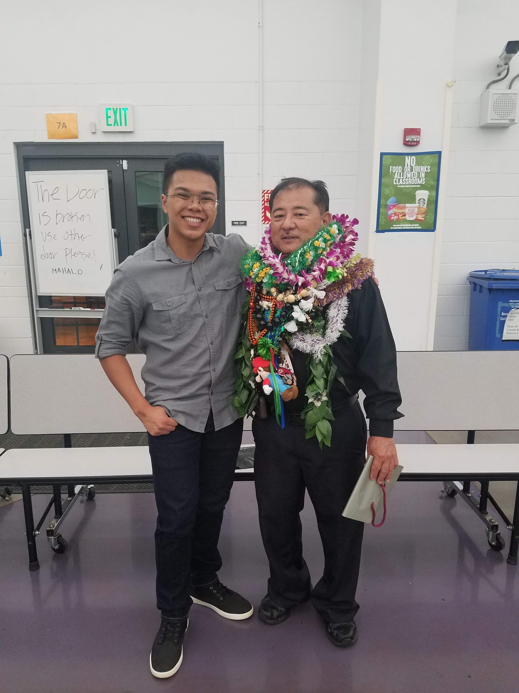

As stated previously, my name is Ethan Capinpin. I'm 17 years old and my hobbies and intersts include listening to music, playng piano and the Tenor Saxaphone, and playing video games. Music, for me personally, had played a major role in my life. Every since I was a wee young lad, I had shown an interst in music and what it has to offer. As time went on, I eventually picked up the piano, to which I instantly fell in love with playing it. Even though I knew what I was playing was far from professional, it was truly something that I enjoyed doing. During the the summer before I entered Intermediate, I was introduced to the Tenor Saxaphone, another instrument I would soon begin to love.
Though I still enjoyed playing the piano, the Tenor Saxaphone had brought a different feel and way of playing. Even though I could read the music, the means to which I play it were very different. The piano could be played simply by pressing on the piano key, but the saxaphone required air on top of pressing the right saxaphone keys. Eventually, I would also learn the sax and begin to enjoy it as well, which would cause me to branch out and try out other instruments.
Today, I'm dealing with the stress of High School, such as literally staying up all night to finish this website due to the programming for the site deciding to radomly stop working regardless of it being fine before. These things will continue to happen, but I will not back down. Throughout the problems that will come my way, I will push through to achieve my goals.

This is a picture of me and my Intermediate Concert Band Teacher, Mr. Iyoki. He would be the individual that would allow me to learn more about the extent of music as well as expose me to a multitude of musical genres.
The first semester had passed and it was a very intersting experience. The type of work I've done was entertaining despite the large amount of stress that had come with it. Regardless, the experience was worthwhile and my educational prowess had increased tenfold.